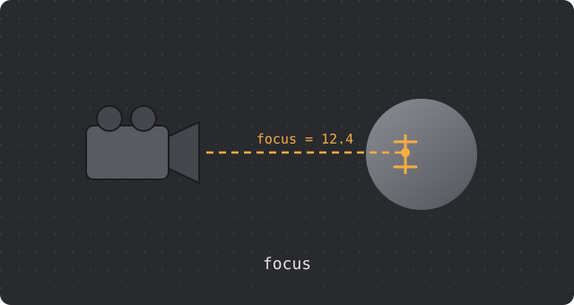

v1.0 · Houdini 22Focus
Haz clic en el viewport y la cámara por la que miras pone su distancia de enfoque en ese punto de la geometría.
Huella SHA-256 del script en SHA256SUMS.
Instalación
- En un shelf, clic derecho → New Tool… y ponle de nombre Focus.
- En la pestaña Script, con el lenguaje en Python, pega el script y pulsa Accept.
Uso
- Mira a través de la cámara en el viewport.
- Pulsa Focus en el shelf.
- Haz clic en la geometría que quieres enfocar. La Focus Distance de la cámara cambia a esa distancia. Esc para salir sin cambiar nada.
Mide la profundidad del punto a lo largo del eje de la cámara, que es lo que usa el plano de foco. Si la Focus Distance está animada, crea un keyframe en el frame actual. Se deshace con un solo Undo.
Funciona con cámaras de OBJ, en contexto OBJ o SOP. No funciona en Solaris (LOPs).